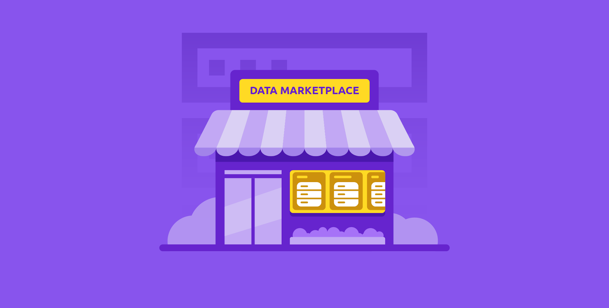
Last Updated: 2024-04-30
A data marketplace is a web portal for browsing, consuming and buying data. There are many approaches to building such a marketplace, but in this demo we will be using Google Cloud services such as Firebase, Apigee, Application Integration, Cloud Run & Identity Platform to build it using cloud-native, managed cloud services with no infrastructure management needed.
This solution is built on three layers.
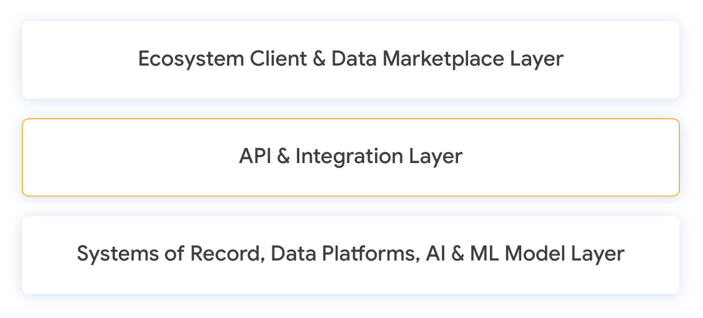
We will be deploying components in all three of these layers, and focusing on the API & Integration layer to automate the API, integration & connectivity between the marketplace & data layers. The result should be an end-to-end solution that works seamlessly to bring data products to market, and manage publishing and access to the products in an automated and unified way.
In this lab you will deploy a marketplace that lets data owners publish & manage their data products, and data consumers register, browse, subscribe and get access to the products.
Your app will:
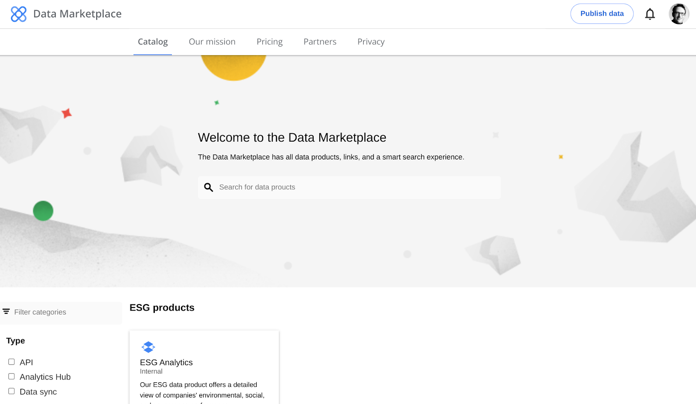
To begin, let's clone the Apigee Data Marketplace project into our shell environment.
Open the Github repository and clone the source code to your shell environment.
git clone https://github.com/tyayers/apigee-data-marketplace.git
cd apigee-data-marketplace
npm iThe last command above npm i will install all of the dependencies for the project.
Now also install the apigeecli and integrationcli CLI tools to help with the deployments.
curl -L https://raw.githubusercontent.com/apigee/apigeecli/main/downloadLatest.sh | sh -
export PATH=$PATH:$HOME/.apigeecli/bin
curl -L https://raw.githubusercontent.com/GoogleCloudPlatform/application-integration-management-toolkit/main/downloadLatest.sh | sh -
export PATH=$PATH:$HOME/.integrationcli/bin
After the installations are complete, go back to your shell environment, and open the folder apigee-data-marketplace in your source editor. If you are using Google Cloud Shell, you can click on the hamburger menu in the upper left corner, File, and then Open Folder.
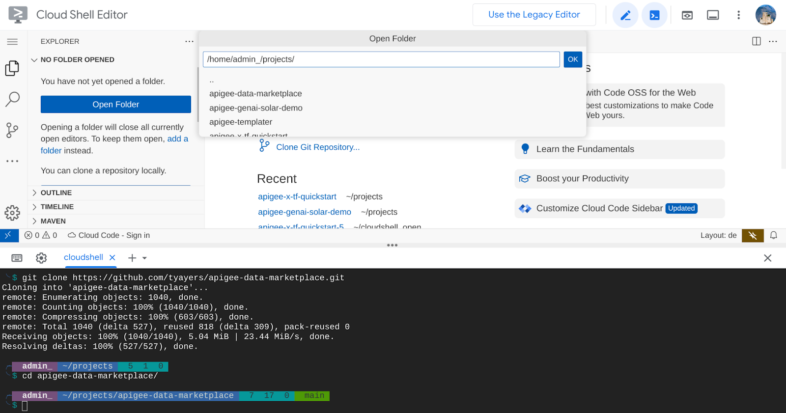
Run these commands in the shell to copy an environment variable file, so that you can set your values from your environment.
cp 1_env.sh 1_env.local.shOpen the file 1_env.local.sh in the editor and set the values from your environment.
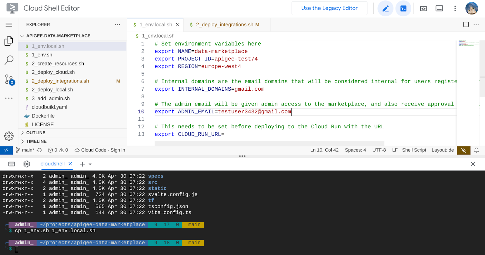
In the above example, I will use the name data-marketplace for my deployments (you can set this to anything you want, it just needs to be lowercase with - or _ to separate words). I will be deploying into the GCP project Id apigee-test74 in the region europe-west4.
The next part is important regarding the internal domain and the admin user. This user will get email alerts when new users register, and approve new users who are not internal. I will be using gmail.com as my internal domain (these users will be accepted without approval), but for all other domains, my testuser3432@gmail.com account will have to approve new user requests. This will be orchestrated by the Application Integration service in GCP.
After setting your environment variables, save the file 1_env.local.sh and source it in your shell. Sourcing makes the variables available to all following commands.
source 1_env.local.shThe next step will create some basic resources in your project - a service account, enable Application Integration and other services, and prepare the project for the next deployments.
Run the command 2_create_resources.sh to run the commands.
./2_create_resources.shNow we're going to create the Application Integration integrations to handle the backend processing, for example when a new user is registered, and we want to register the user and check if an approval is necessary.
./3_deploy_integrations.shCheck in the Application Integration console that the integrations were created correctly. You should see integrations like in this screenshot.
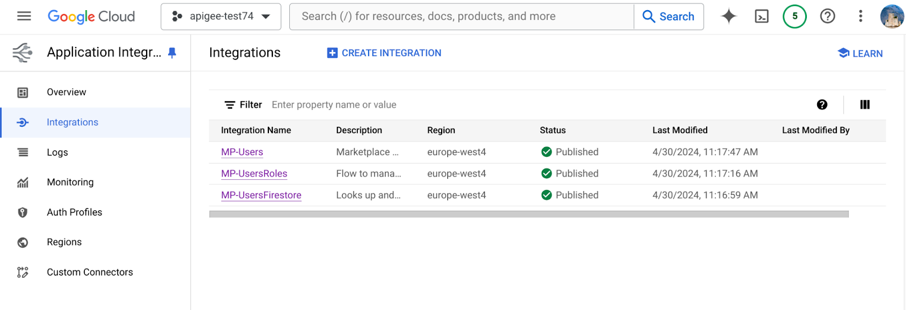
Google Cloud Identity Platform uses Firebase Auth as a federated identity hub for users to be able to flexibly login to our marketplace.
To start, we need to set up the service Identity Platform in our Google Cloud project. Open up the configuration page, and enable the service if needed.
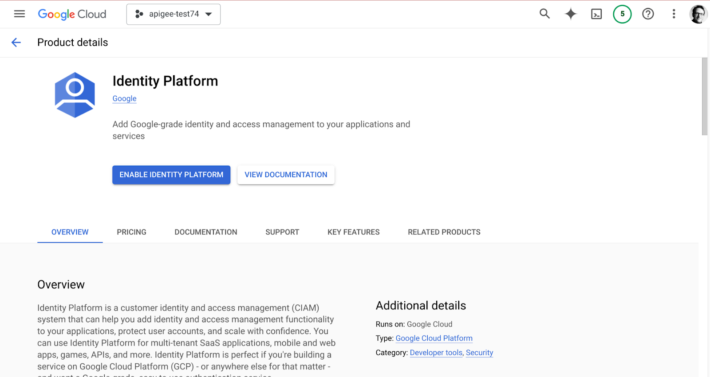
After enabling you should see a screen where you can manage identity providers.
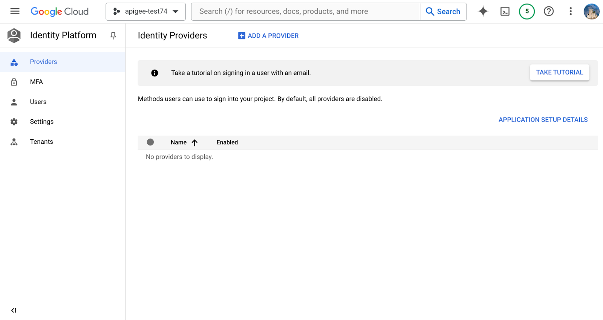
Go ahead and add two providers by clicking the ADD A PROVIDER button and selecting Email / Password and Google. You can test adding other providers as well.
For the Google provider you will need to configure the OAuth consent screen for your project.
After updating the identity providers, click on the button APPLICATION SETUP DETAILS and copy the two lines containing apiKey and authDomain from the code snippet shown in the window under WEB.
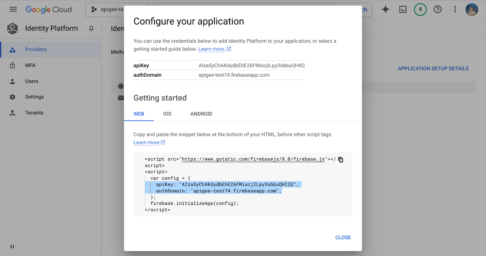
Now go back to your shell environment with the source code, and open the file under src/lib/app-service.ts and scroll down a bit until you see the firebaseConfig definition, and replace the two lines with apiKey and authDomains with the values you copied from the Identity Platform config window.
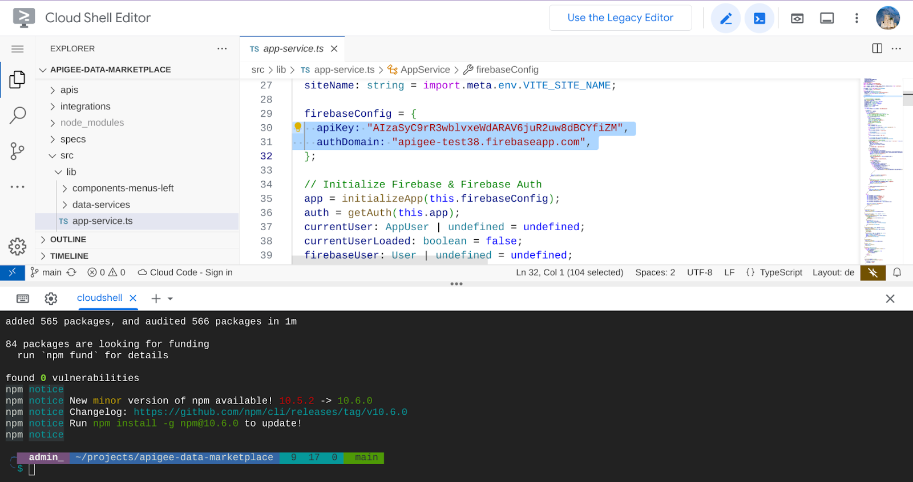
Save the file.
Now go into the shell window and run npm run dev to start the application. You should see a message that the app is running at `http://localhost:5173` . Now go to the top-right corner and click the Web Preview button.
Then click Change Port and enter the 5173 port, and click Change.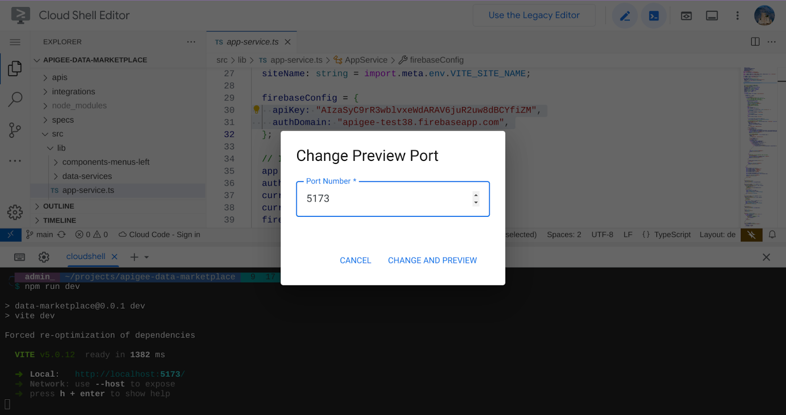
A new tab should be opened with the application running.
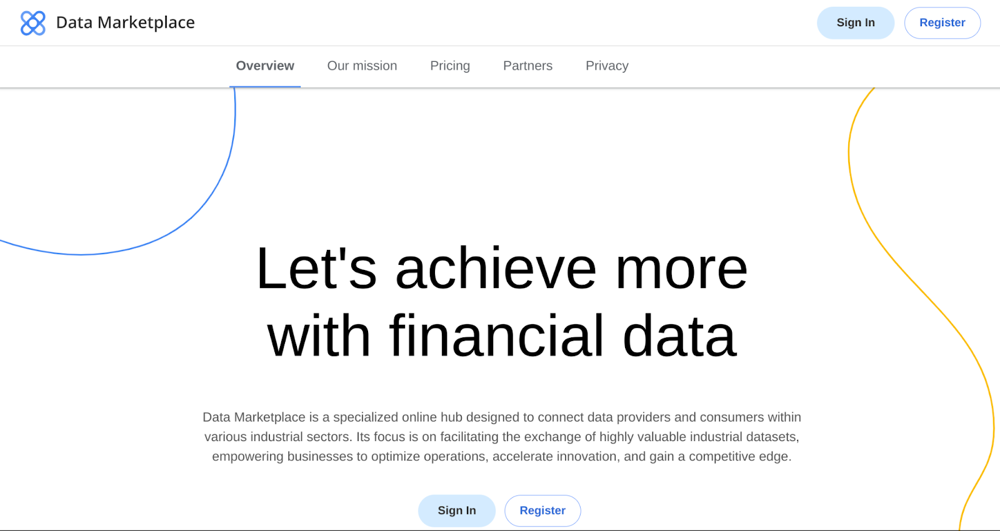
Click on Register and then try registering with an email/password to create a new account.